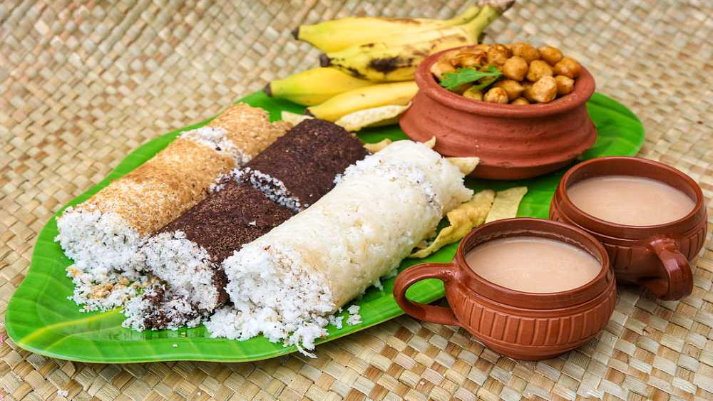

Kerala cuisine is one of India's most distinctive and underrated food traditions. Deeply influenced by the state's coastline, tropical forests and centuries of spice trade, it combines coconut, curry leaves, mustard seeds, tamarind and an array of freshly ground spices into dishes that are both deeply comforting and explosively flavourful. Here are the 15 dishes every first-time Kerala visitor should seek out.
1. Sadhya — The Grand Banana Leaf Feast
The pinnacle of Kerala cuisine — a traditional vegetarian feast of 20–28 dishes served on a fresh banana leaf, eaten with your right hand. Includes rice, sambar, rasam, avial, olan, thoran, pachadi and an array of pickles, pappadums and payasam dessert. Served at Hindu temples, weddings and many restaurants on Sundays. Best experience: Any traditional Kerala hotel or ashram during Onam (August–September).
2. Karimeen Pollichathu — Pearl Spot in Banana Leaf
The signature fish dish of the Kerala backwaters — pearl spot fish marinated in a spice paste and grilled wrapped in banana leaf. The banana leaf imparts a subtle flavour and keeps the fish incredibly moist. Found at almost every backwater restaurant and houseboat menu.
3. Puttu and Kadala Curry
The quintessential Kerala breakfast — cylindrical steamed rice flour cakes (puttu) served with spiced black chickpea curry (kadala). Humble, filling and deeply satisfying. Available at every small Kerala hotel from 7 AM onwards.
4. Appam with Stew
Lacy, bowl-shaped fermented rice pancakes (appam) paired with a fragrant coconut milk vegetable or meat stew. The crispy edges and soft, spongy centre make it uniquely textured. A Kerala Sunday morning staple.
5. Kerala Fish Curry (Meen Curry)
Made with kudampuli (Gamboge/Kodampuli) — a distinctive dried fruit that gives Kerala fish curry its unique sour, tangy character unlike any other Indian fish curry. Cooked in an earthen pot for the best flavour. Absolutely essential.
6. Prawn Moilee
A delicate, coconut milk-based prawn curry with turmeric and green chillies — mild enough for non-spice lovers but layered with flavour. Found in all Kerala coastal restaurants and on houseboat menus.
7. Thalassery Biryani
Kerala's own distinct biryani style — made with short-grain Kaima rice (not basmati), a distinct spice blend and typically chicken or mutton. Lighter than Hyderabadi biryani with a uniquely aromatic character. The authentic version is found only in Thalassery (Tellicherry) and Kozhikode.
8. Beef Ularthiyathu — Kerala Dry Beef Fry
Kerala is one of the few states in India where beef is a mainstream dish. This slow-cooked dry beef preparation with coconut pieces, curry leaves and black pepper is extraordinarily flavourful and pairs perfectly with a parotta (layered flatbread). Find it at any non-vegetarian Kerala hotel.
9. Parotta with Chicken Curry
The beloved street food pairing — flaky, layered Kerala flatbread (parotta) with rich, slow-cooked chicken curry. The parotta is made by stretching and layering dough repeatedly before cooking — the result is impossibly flaky and satisfying.
10. Avial
A mixed vegetable preparation in a coconut and curd base, tempered with coconut oil and curry leaves. Avial features prominently in Sadhya and is a cornerstone of Kerala vegetarian cooking — creamy, fragrant and completely unique.
11. Kappa (Tapioca) and Fish Curry
Boiled tapioca mashed with coconut, green chillies and curry leaves, served with spicy Kerala fish curry — one of the most iconic Kerala combinations. A central food staple in rural Kerala for centuries.
12. Unniyappam
Small, round fried sweets made from rice flour, jaggery, banana and cardamom. Eaten as a snack or dessert and particularly associated with temple offerings. Find them at any Kerala bakery or street stall.
13. Palada Payasam
A delicate rice flake pudding cooked in milk, sweetened with sugar and flavoured with cardamom. The defining dessert of any Kerala Sadhya. Rich, creamy and perfectly balanced.
14. Kerala Prawn Pickle (Chemmeen Achar)
Small dried prawns pickled in a tangy, spicy base of vinegar, ginger and green mango. Intensely flavoured and served in tiny quantities as a condiment. Take a jar home — it keeps for weeks and tastes extraordinary.
15. Filter Coffee — The Kerala Way
Kerala has a strong filter coffee culture, particularly in Thrissur and Palakkad. Strong, dark decoction coffee served with hot milk in traditional stainless steel dabaras. The best versions come from small South Indian filter coffee shops rather than café chains.
Where to eat: Skip the tourist-facing restaurants near major attractions. Instead, ask your Nature Green Holidays driver to recommend a local hotel (the Kerala term for a small restaurant) — you'll eat infinitely better food for a fraction of the price. Our drivers know every excellent local joint across the state.